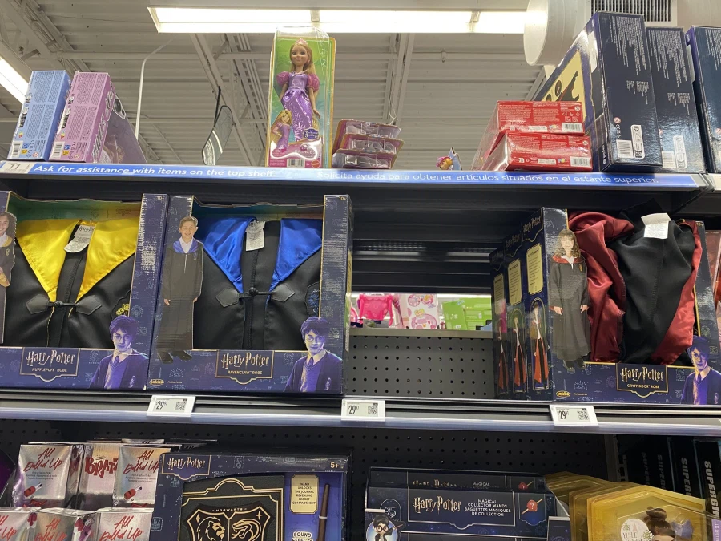

슬리데린 코스프레만 다팔림
아니 그리핀도르도 다 안팔렸는데

슬리데린 코스프레만 다팔림
아니 그리핀도르도 다 안팔렸는데
진정하고, 일딴 기대는 해보자 또 모르자나?
가슴이 크면?
포터발견! MAGIC을 잘 사용했으니 REWARD를 받아야겠지?
아바다카다브라 체인 캐스티이이이이이이이이이이이잉아!
꼴리는지 안꼴리는지는 까봐야알지
Ts말포이 해야하거든
그래그래 온팬에서 보자
그리고 할로윈이 끝나고 쏟아져나오는 반품
후프프프 꺼는 안팔리나
2d일때나 꼴리는거지 어디서 문신덕지덕지 그려놓은 애들이 지들취향으로 바꿔서 TS말포이가 유행이라 따라해봤어~ 이러면서 흑발 고스나 레게머리 흑인년이 인스타나 틱톡에 올리는건 씹노꼴인뎅